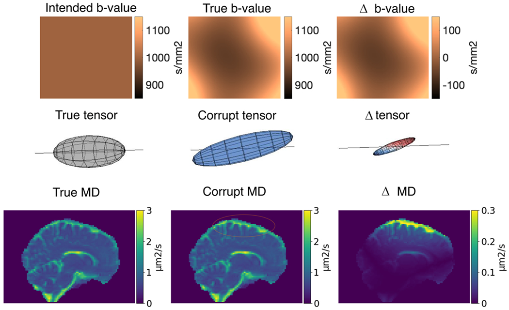
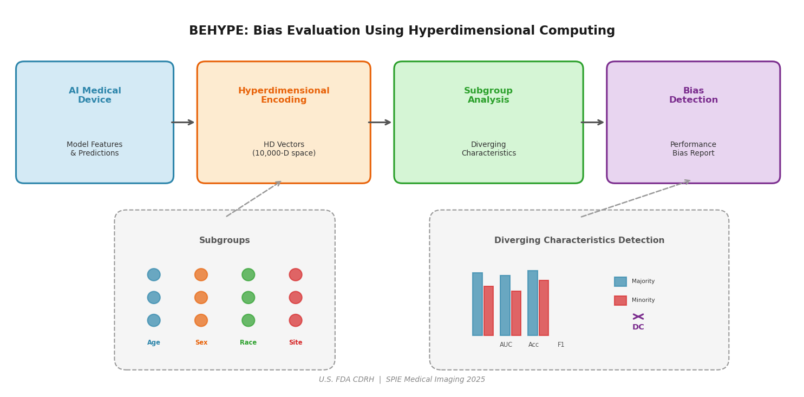
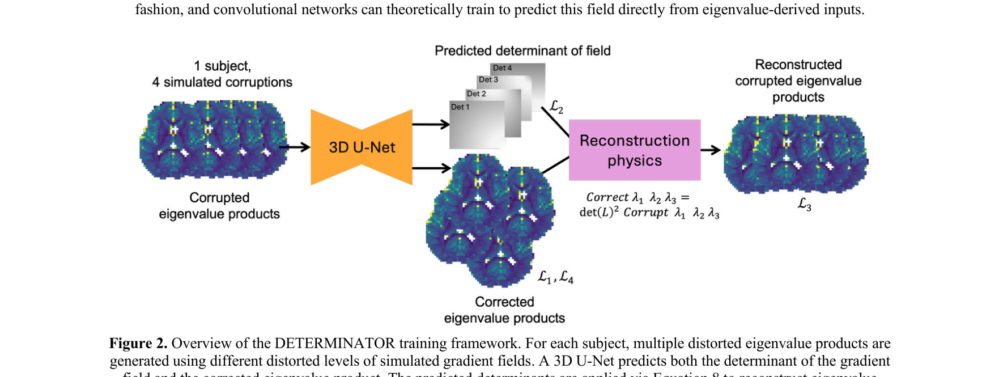
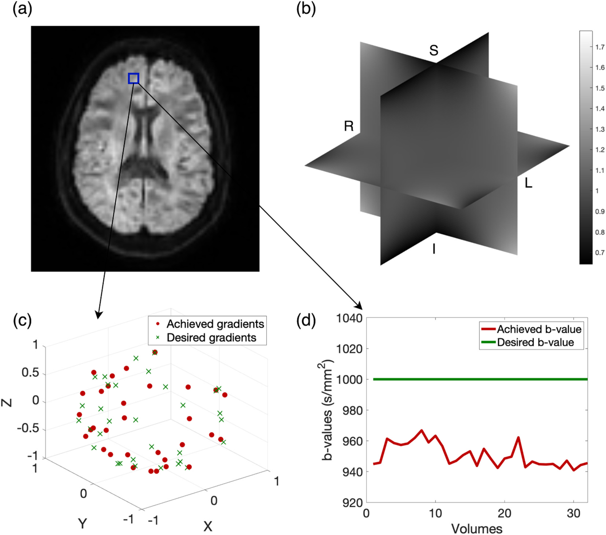
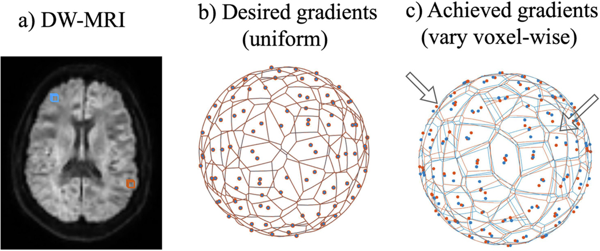
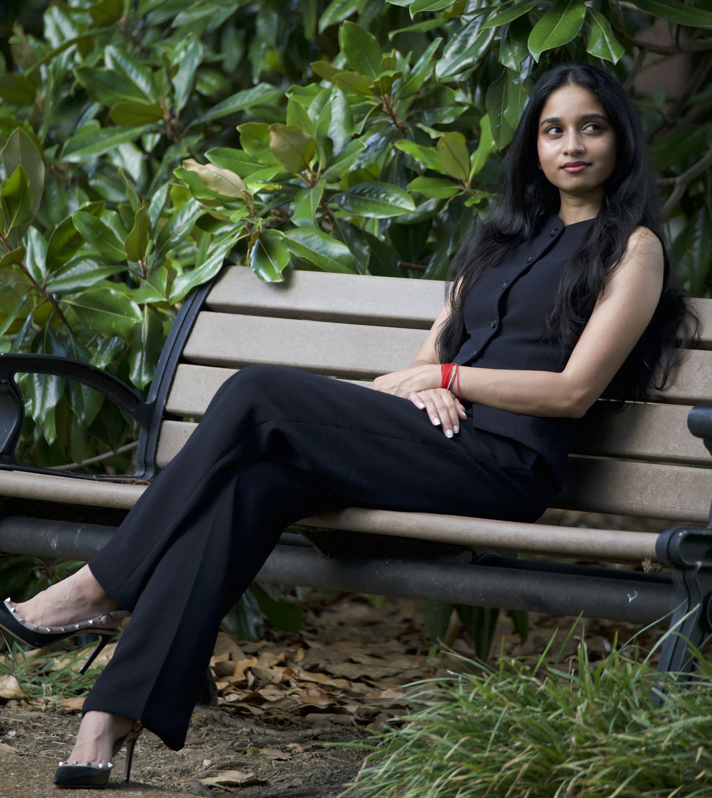

I am an AI/ML Research Scientist at Bioscope AI, where I build a precision longevity platform integrating multi-omics data with neuroimaging. I recently graduated with a Ph.D. in Computer Science from Vanderbilt University, advised by Dr. Bennett A. Landman in the MASI Lab.
My dissertation developed physics-informed neural networks that eliminate 10–30% scanner-induced errors in quantitative brain imaging. During my Ph.D., I interned at the U.S. FDA where I developed BEHYPE, a framework for detecting bias in AI-based medical devices. My corrections enabled two landmark studies: the first normative white matter brain charts (Nature, 2026) and the largest white matter asymmetry study ever conducted (Human Brain Mapping, 2026).
Across this work, a common thread is moving AI from research into practice — standardizing and optimizing medical image analysis pipelines so they perform reliably in clinical environments. My broader expertise spans deep learning, regulatory AI, image harmonization, and biomedical informatics.

Physics-Informed Deep Learning · Diffusion MRI · Bias Field Correction · Gradient Nonlinearity Correction · AI Fairness & Trustworthiness · Medical Device Regulation · Clinical AI Infrastructure · LLMs in Healthcare · Neuroimaging · Brain Age Estimation · Multi-Omics Data Fusion
First Author

Mapping the Impact of Nonlinear Gradient Fields on dMRI Tensor Estimation
SPIE · Wagner Finalist 2022 · 5 citations
Robert F. Wagner Best Student Paper Finalist · Top ~1.5% of 1,000+ papers

BEHYPE: Bias Evaluation Using Hyperdimensional Computing for AI-Based Medical Devices
SPIE Medical Imaging, 2025
Developed at U.S. FDA CDRH

DETERMINATOR: Determinant Gradient Field Estimation for Accurate b-Value Correction in Diffusion MRI
SPIE Medical Imaging, 2026

Mapping the Impact of Nonlinear Gradient Fields with Noise on Diffusion MRI
SPIE Medical Imaging, 2023 · 6 citations

Efficient Approximate Signal Reconstruction for Correction of Gradient Nonlinearities in Diffusion-Weighted Imaging
ISMRM, 2023 · 2 citations
Selected Contributions
Bioscope AI
- Precision longevity platform — genomics, microbiome, imaging, wearables, EHR
- Neuroimaging module: 95+ structure segmentation, brain-age, 7 disease selectors
- LLM clinical interpretation; SaMD regulatory clearance
Vanderbilt University — MASI Lab
- Physics-informed deep learning for scanner bias correction
- DeepN4: open-source contribution to DIPY
- US patent for gradient-nonlinearity correction in dMRI
- Mentored 4+ junior PhD and Masters students
U.S. Food & Drug Administration — CDRH/OSEL
- BEHYPE framework for bias detection in breast imaging AI
- Regulatory-science review on LLMs in clinical workflows
- Invited talk at FDA Scientific Research Day
Vanderbilt University
- HIPAA-compliant AI platform across 7 departments
- XNAT: 379+ projects, 48,556+ subjects, 480,000+ scans
- BIDS tooling replicated at Brown, Oxford, and UCL
Brookhaven National Laboratory
- Computational modeling of lipid metabolism with CUDA
Stony Brook University
- 3D organ segmentation for radiation therapy (IEEE ISBI, 2020)
Advisor: Dr. Bennett A. Landman
Focus: Medical Image Processing
Advisor: Dr. Fusheng Wang
Study Abroad: Colorado State; Flinders University, Australia
- Provisional US Patent (2025) — Gradient-nonlinearity estimation and correction in diffusion MRI. Vanderbilt University.
- Robert F. Wagner Best Student Paper Finalist (2022) — SPIE Medical Imaging. Top ~1.5% of 1,000+ submitted papers.
- Best Poster Award (2022) — Vanderbilt University Institute of Imaging Science (VUIIS).
- University Travel Grants (2022, 2023, 2024) — Vanderbilt University competitive awards for SPIE and ISMRM conferences.
- Study Abroad Scholarship (2017) — Full scholarship to Flinders University, Australia.
-
"Diverging Representations in AI Models for Improved Transparency"
FDA Scientific Research Day — August 2024
-
"Bias Evaluation in AI Models"
FDA AI/ML Program — 2024
-
"Efficient Approximate Signal Reconstruction for Correction of Gradient Nonlinearities"
VUIIS Retreat — October 2023
-
"Deep Learning for Medical Images"
Dr. N.G.P. Institute of Technology, India — 2022
-
"Mapping the Impact of Nonlinear Gradient Fields on dMRI Tensor Estimation"
SPIE Medical Imaging — February 2022
- Women of VISE Steering Committee — Organized networking and mentorship events for women in imaging sciences, 2021–2024
- MASI Lab Operations Lead — Onboarding, code-review coordination, and compute administration, 2023–2025
- Graduate Senator — Stony Brook University, 2018–2019
Programming & ML
Medical Imaging
Deep Learning
Infrastructure

I grew up in Coimbatore, a city in southern India known for its engineering colleges and its proximity to the Western Ghats. From there, I've followed curiosity across three continents — studying in Australia on a full scholarship, researching at Brookhaven National Laboratory, and completing my Ph.D. at Vanderbilt in Nashville.
When I'm not debugging a neural network or reading a paper, you'll find me training for a marathon, on a yoga mat, or exploring a new city with a good hot chocolate in hand. I believe deeply that the curiosity which drives good science is the same curiosity that makes life interesting — and I try to bring that energy to everything I do.